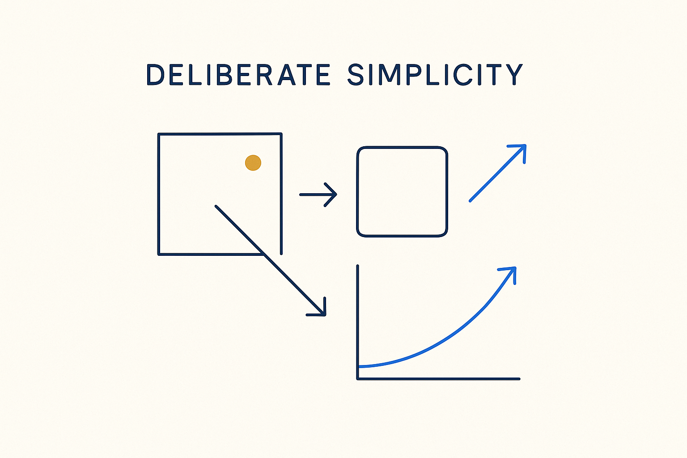

Make each part as plain as it can be without losing what matters — reuse only the fraction you actually need, and strip the rest.

> Make each part as plain as it can be without losing what matters — reuse only the fraction you actually need, and strip the rest.
Simplification is the discipline of removing everything that isn’t earning its place. Most users of a heavy modeling tool only ever touched a fraction of it; most models carry structure no one uses. The simple move — build on your own requirements, reuse only the fraction you actually need, strip the rest — is not laziness, it is precision. What remains is easier to understand, cheaper to maintain, and far harder to get wrong.
The bar is Einstein’s: as simple as possible, *but not simpler.* Simplification is not dumbing down; it is finding the smallest form that still carries the meaning. Cut a necessary distinction and you have oversimplified; keep an unnecessary one and you have hidden the signal in noise. The skill is knowing which is which — and that comes from having decomposed the problem first.
Simplification is the twin of decomposition: break the whole into the right parts, then make each part as plain as it can be. Together they are what lets a complex landscape be modeled clearly instead of merely completely.
Where it lives: the attitude layer of Breakthrough Modeling — as simple as possible, not simpler.